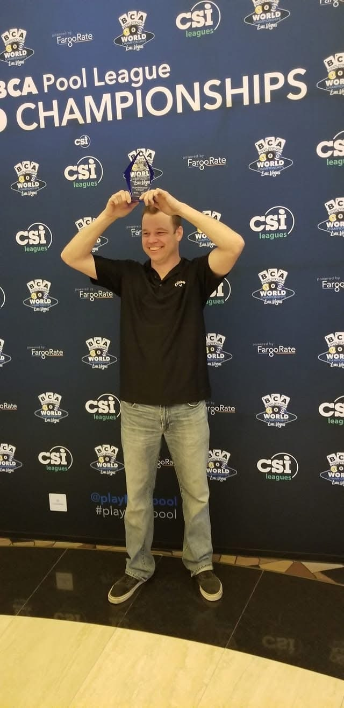
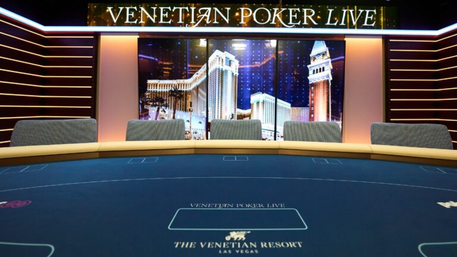

This image shows Tim holding the trophy he earned after placing second in the BCA World Championships. The win was especially memorable to him because of the live-streamed jump shot that immediately won him his first match of the final round. The trophy stands as a symbol of his dedication and skill in the game.
Family is central to Tim's life, and this photo represents the accomplishment he values most: raising three hardworking children into adulthood. It also reflects the continued joy he finds in spending time with his wife, children, and grandchild.

This image of a live poker game represents Tim’s professional goal of transitioning into dealing at live tables. It symbolizes both his career path and his drive to keep growing in his profession.